Introduction
My first day of internship was all about setting up my development environment, learning GitHub, and publishing my first portfolio website. Each step is documented with screenshots, making this a complete record of my journey.
Step 1: Searching GitHub
I began by searching for GitHub to understand its features and importance in collaborative coding.
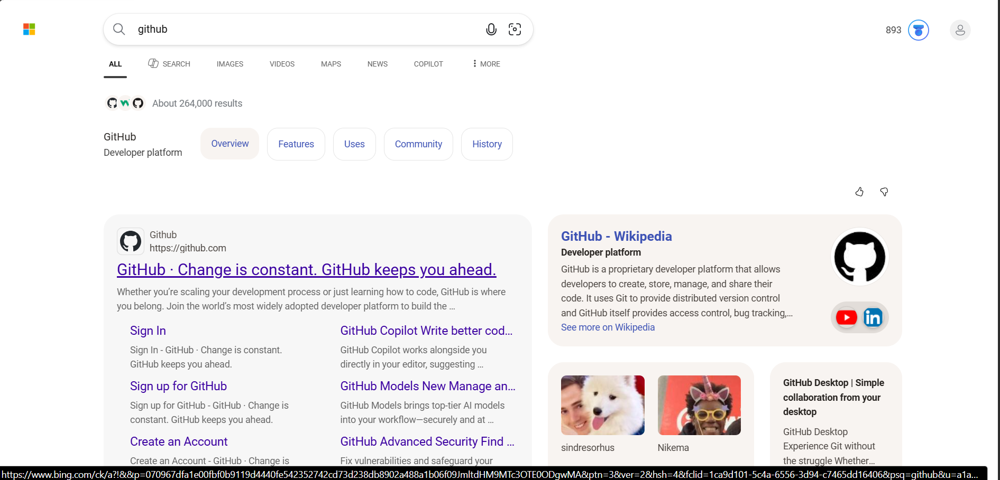
Step 2: Signing Up on GitHub
I created my GitHub account by entering my email and signing up.
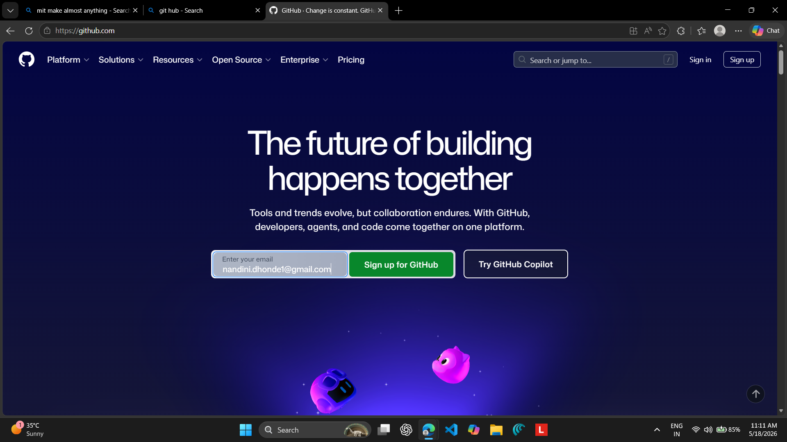
Step 3: Logging Into GitHub
I logged in with my credentials to access repositories and developer tools.
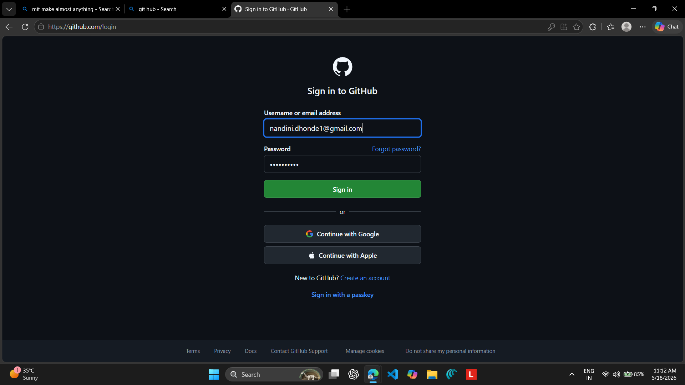
Step 4: Installing Visual Studio Code
I downloaded and installed VS Code, my main coding editor.
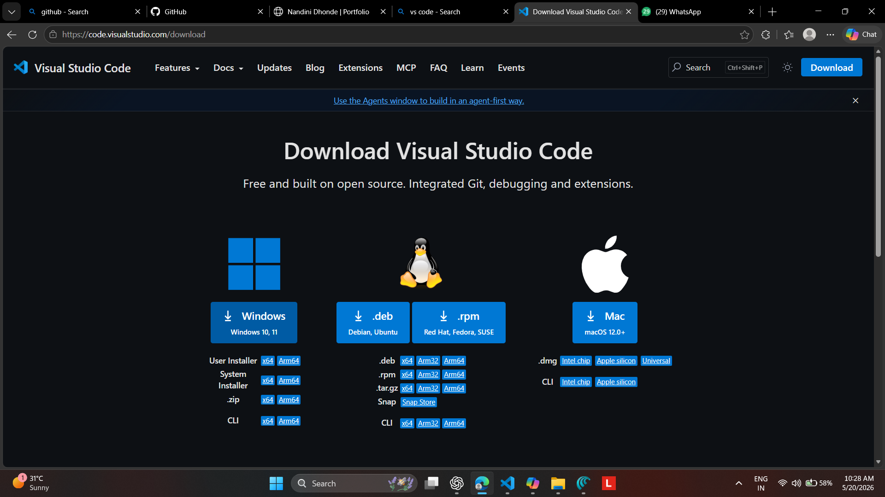
Step 5: Setting Up VS Code
I customized VS Code with extensions and settings to prepare my workspace.
Step 6: Installing Live Server Extension
I installed the Live Server extension to preview my projects in real time.
Step 7: Creating Portfolio Website Folder
To stay organized, I created a folder named “portfolio-website.”

Step 8: Opening Folder in VS Code
I opened the portfolio-website folder in VS Code to begin coding.
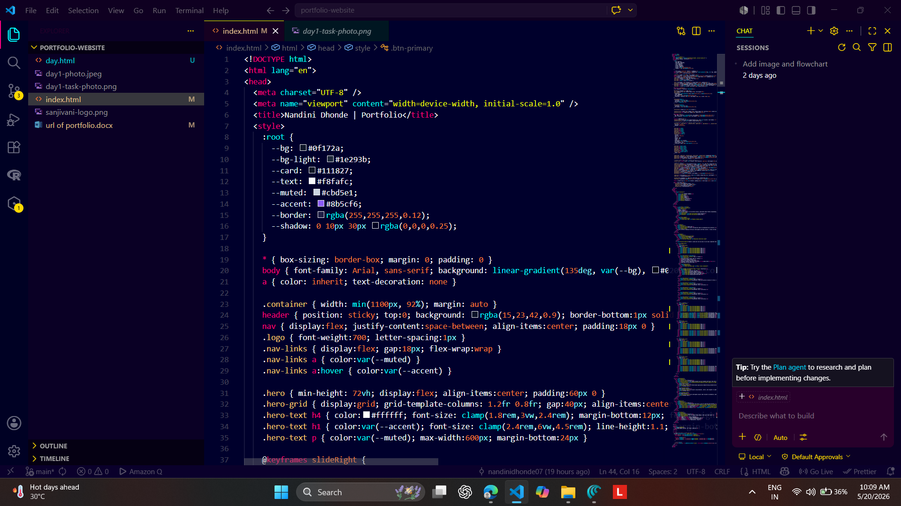
Step 9: Creating a GitHub Repository
I created a repository named “TI_intern_Nandini” to store my project online.
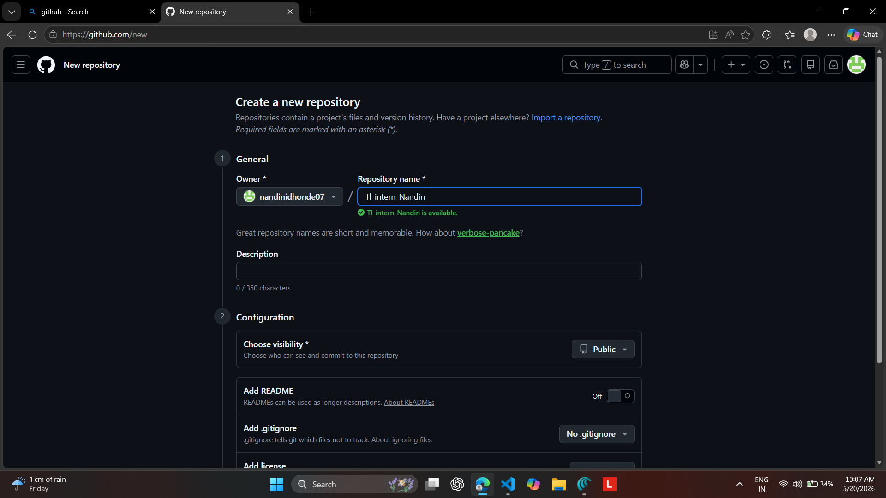
Step 10: Coding My Portfolio Website
I wrote HTML and CSS code for my portfolio, adding my photo and the Tinkerers’ Lab logo.
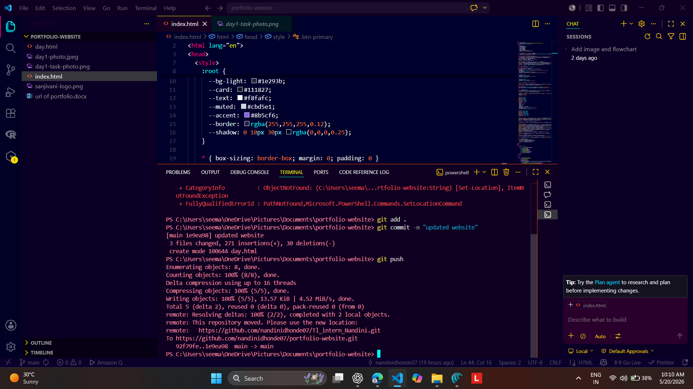
Step 11: Pushing Code to GitHub
I used Git commands like git add, git commit and git push to upload my portfolio to GitHub.
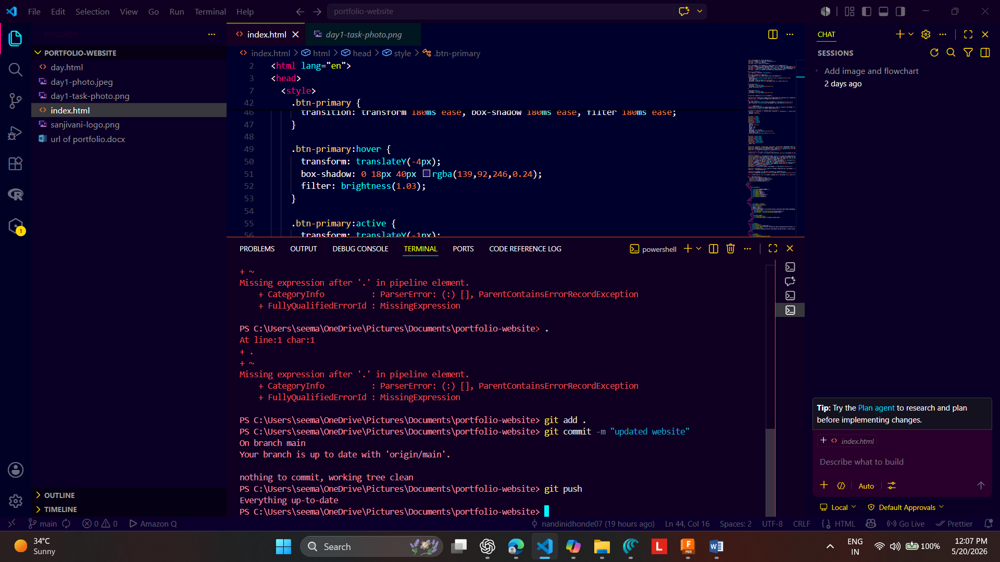
Step 12: Updating and Pushing Changes Again
I refined my design and pushed updates again using Git commands.
Step 13: Configuring Repository Settings
I explored repository settings, adjusting the default branch and other options.
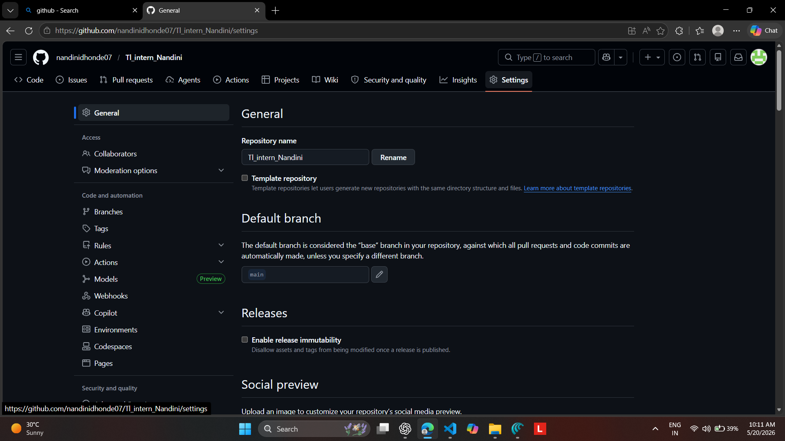
Step 14: Enabling GitHub Pages
I enabled GitHub Pages to host my portfolio website directly.
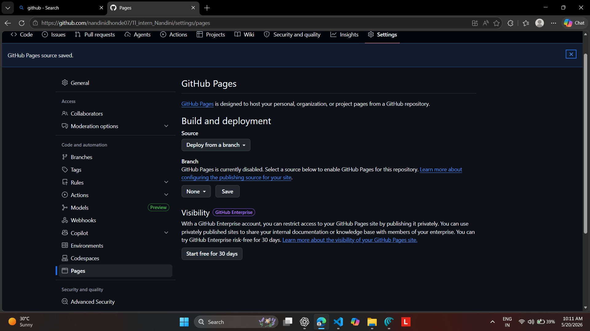
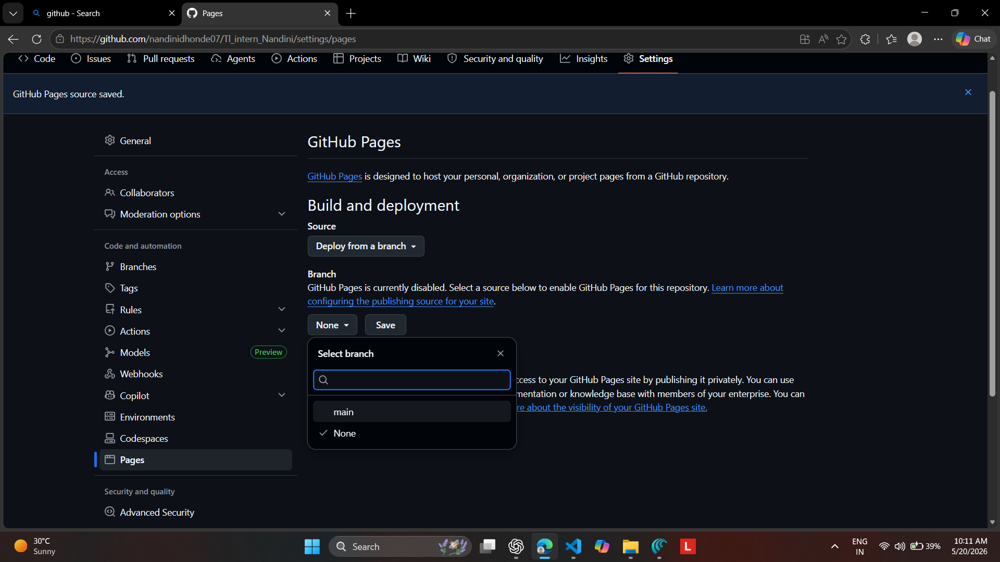
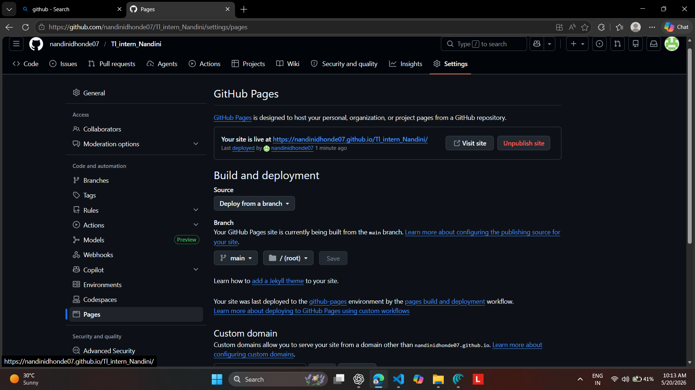
Step 15: Publishing My Portfolio Website
Finally, my portfolio website went live successfully.
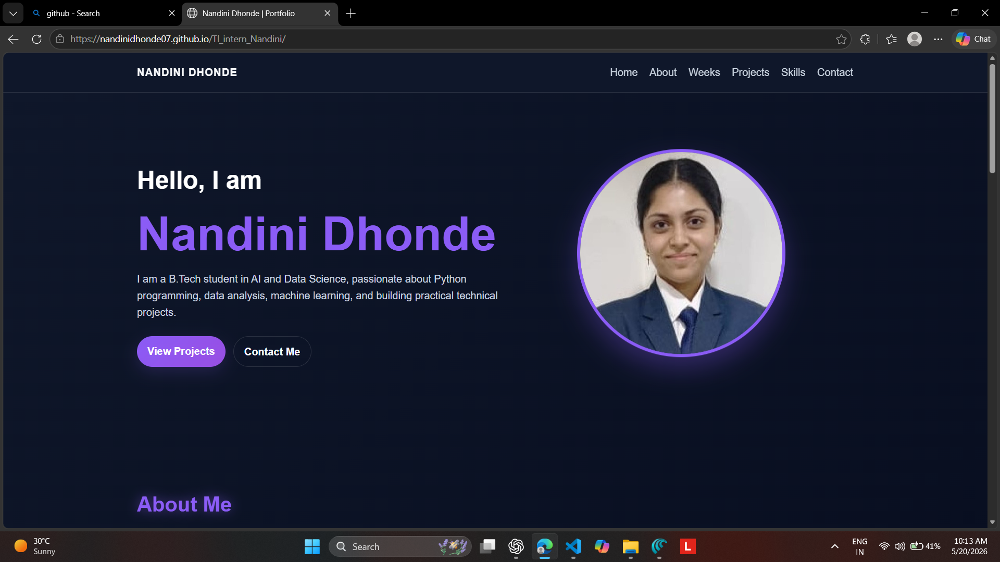
Conclusion
- Created and managed GitHub account and repository.
- Installed and configured VS Code with Live Server.
- Organized files and coded a portfolio website.
- Pushed work to GitHub and published it live using GitHub Pages.
Reflection
Day 1 was a complete journey from setup to deployment. I learned how to manage repositories using GitHub, configure VS Code, apply Git commands professionally, and deploy a live website using GitHub Pages.
References
- ChatGPT & Microsoft Copilot
- Google Search
- YouTube Tutorials
- The Comet